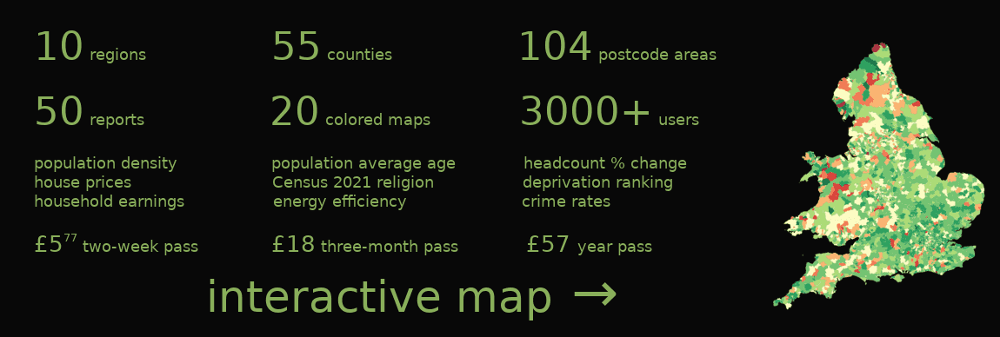

Bath postcode area Census 2021
94.4% people are white, 2.3% people are asian, 2.0% people are mixed.
46.5% are Christian, 44.1% have no religion, 6.9% provided no answer.
41.3% households have 1 car, 30.4% households have 2 cars, 16.3% households have no car. Bath population ethnic group

Ethnicity Share: Bath postcode area Compared to England & Wales (2021 Census)| Ethnicity | Bath postcode area | England & Wales (UK) |
|---|
| Asian | 2.3% | 9.3% |
| Black | 0.7% | 4.0% |
| Mixed | 2.0% | 2.9% |
| Other | 0.7% | 2.1% |
| White | 94.4% | 81.7% |
Bath population health

Health Quality Share: Bath postcode area Compared to England & Wales (2021 Census)| Health | Bath postcode area | England & Wales (UK) |
|---|
| very good | 48.7% | 48.4% |
| good | 34.3% | 33.6% |
| average | 12.4% | 12.7% |
| poor | 3.5% | 4.0% |
| very poor | 1.0% | 1.2% |
Bath population religion

Religion Share: Bath postcode area Compared to England & Wales (2021 Census)| Religion | Bath postcode area | England & Wales (UK) |
|---|
| Buddhist | 0.5% | 0.5% |
| Christian | 46.5% | 46.2% |
| Hindu | 0.3% | 1.7% |
| Jewish | 0.1% | 0.5% |
| Muslim | 0.8% | 6.5% |
| No answer | 6.9% | 6.0% |
| No religion | 44.1% | 37.2% |
| Other | 0.1% | 0.9% |
| Sikh | 0.8% | 0.6% |
Bath population economic activity

Economic Activity Share: Bath postcode area Compared to England & Wales (2021 Census)| Economic activity | Bath postcode area | England & Wales (UK) |
|---|
| Employee | 44.6% | 46.0% |
| Empl. owner w/ empl. | 1.5% | 1.5% |
| Empl. self, no empl. | 9.2% | 7.9% |
| Empl. student | 1.7% | 1.7% |
| Inactive home,family | 3.6% | 4.8% |
| Inactive sick,other | 5.5% | 7.3% |
| Retired | 24.6% | 21.6% |
| Student, no work | 7.2% | 6.3% |
| Unemployed | 2.0% | 2.8% |
Bath car availability in a household
On average, there are 1.39 cars per household in Bath postcode area. In England and Wales it's 1.23 cars per household.

Number of Cars in a Household Share: Bath postcode area Compared to England & Wales (2021 Census)| Number of cars in a household | Bath postcode area | England & Wales (UK) |
|---|
| No car | 16.3% | 23.3% |
| 1 car | 41.3% | 41.3% |
| 2 cars | 30.4% | 26.2% |
| 3+ cars | 11.9% | 9.2% |
Bath household deprivation
A : very good .. E : very bad. A : household is not deprived, B : deprived in 1 dimension, ... E : household is deprived in all four dimensions (education, employment, health, housing).

Household Deprivation Share: Bath postcode area Compared to England & Wales (2021 Census)| Household deprivation | Bath postcode area | England & Wales (UK) |
|---|
| A | 52.1% | 48.3% |
| B | 33.3% | 33.5% |
| C | 12.0% | 14.3% |
| D | 2.5% | 3.7% |
| E | 0.1% | 0.2% |
Bath population partnership

Partnership Share: Bath postcode area Compared to England & Wales (2021 Census)| Partnership | Bath postcode area | England & Wales (UK) |
|---|
| Never married/partnership | 35.5% | 37.9% |
| Married/partnership | 46.4% | 44.6% |
| Separated | 2.0% | 2.2% |
| Divorced | 9.7% | 9.1% |
| Widowed | 6.3% | 6.1% |
Plumplot area insights

Bath cars per household map.webp
This map shows the average number of cars per a household in a given postcode sector.

Next for Bath postcode area


 login →
login →